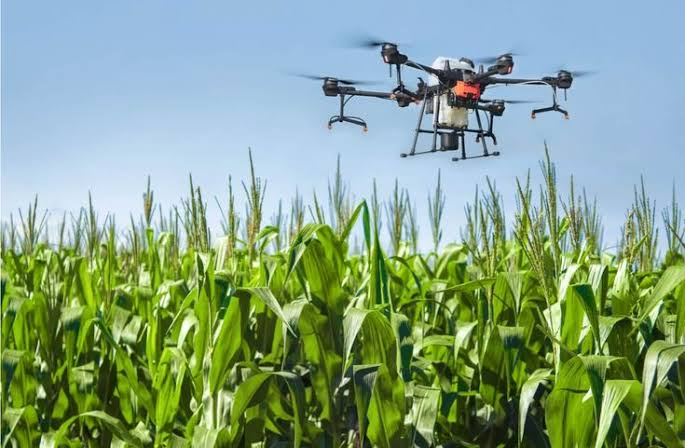

PLANTS DISEASE DETECTION USING UAV
 In recent years, Unmanned Aerial Vehicles (UAVs) normally reffered to as “Drones” have been adopted to provide services in numerous applications. Due to their ability to cover wide areas and capturing ultra-high-resolution aerial images at low cost, drones became an extremely important source of visual information especially in argicultural field. Agriculture is backbone of any country. About 60% of our country's population works in agriculture or the primary sector. It contributes more to our country's GDP. It employs the majority of India's population. The major difficulty in agriculture is the accurate detection and diagnosis of plant disease and plant stress. Identification of the plant disease is the key to prevent the losses in the yield and quantity of the agricultural product. The plant disease diagnosis is critical for farmers to monitor manually as it requires time and knowledge of plant pathogens. Plant diseases are caused by bacteria, fungi, virus etc. of which fungi is the main disease causing organism. This is detected using image processing by capturing the image of the leaves using Drones(UAV’s) and comparing with the data sets in web based tool application. Algorithm for feature extraction and classification based on image processing techniques were designed. The goal is to detect, to identify, quantifying the symptoms of disease ,providing solution and detect the rate of spreading of the disease by which the farmers can preplan their harvesting to prevent losses. In existing farming technology the articles are released by which the farmers cannot identify all the diseases and its solution. This plant disease detection through leaf image processing techniques and deep learning are very useful and inexpensive system especially for assisting farmers in monitoring the big plantation area. This comes under the scheme of Sub Mission on Plant Protection and Plant Quarantine (SMPP).
GRAVITY BASED ENGERY STORAGE
Efficient energy storage is a critical part in the energy conversion. 1% of energy saving is equal to 4% of energy generation. Storage of electrical energy is the key for power demand in future technologies. Storing of energy can be done using batteries, flywheel, compressed air, and pumped storage system.
Out of these storage methods, batteries are mostly used to store electric power. Batteries don’t last for a longer period of time, and proper care should be taken to avoid environmental impacts whereas the other systems having their own drawbacks and environmental issues.
Energy storage based on Methane and Hydrogen methods involve harmful chemical reaction and fire hazard. But Gravity based energy storage has no chemical reactions.
Gravity based energy storage can store large amount of kinetic energy for long time. The energy converting efficiency of gravity-based storage system is around 80% which is more than conventional system. The proposed gravity-based energy storage system has the ability to overcome the drawbacks of conventional systems and have advantages like 24/7 long lasting energy, higher efficiency and low operational cost.